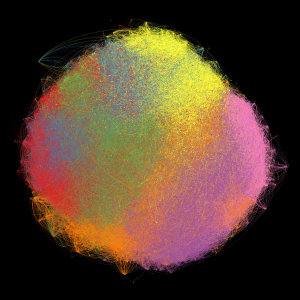

Genealogia acadêmica brasileira
Grandes áreas do conhecimento

Passe o mouse sobre a imagem para ver detalhes
Vértices: 197.034
Arestas: 296.889
Grafo de genealogia acadêmica brasileira
por R. J. P. Damaceno & J. P. Mena-Chalco.